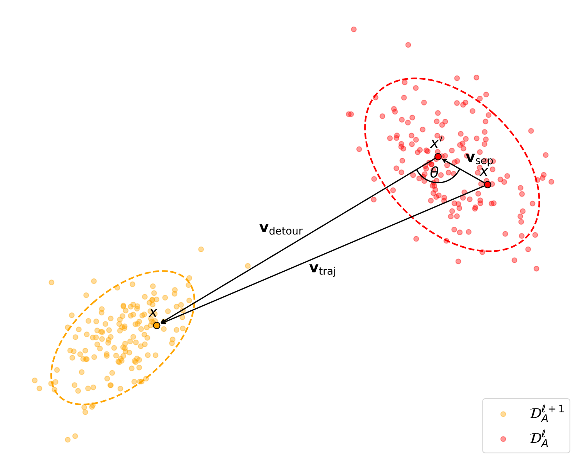
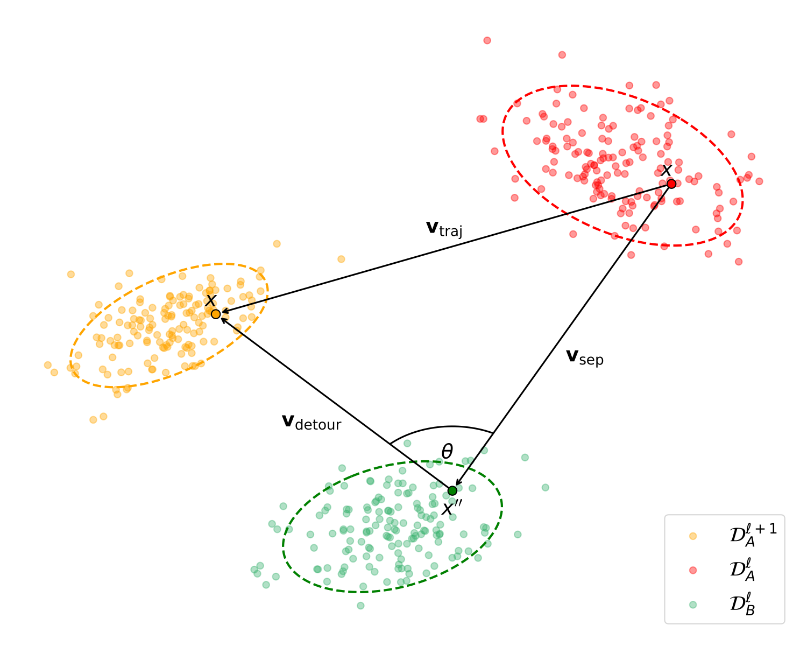

Layer-wise Geometric Trajectories
For an anchor sample x in domain DA, we draw an intra-domain partner x' and a cross-domain partner x'' from DB. At every layer transition l → l+1, we form a triangle of displacement vectors:
- vsep — the spatial separation between the two samples at layer l.
- vdetour — the path from the partner at l to the anchor at l+1.
- vtraj — the anchor's direct trajectory from l to l+1.

(a) Within-domain dynamic.

(b) Across-domain dynamic.
Within-domain (left) vs. across-domain (right) dynamics. Per the triangle closure identity (proved in the appendix), vsep + vdetour = vtraj, so the relative distance d measures the normalized excess path length of the detour, and the angle θ quantifies the misalignment between separation and trajectory.